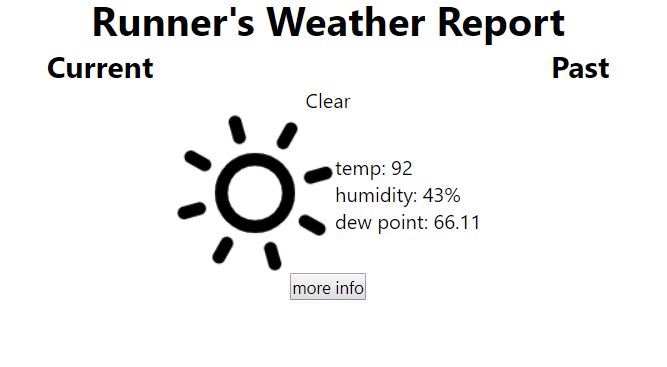

Weather App is a web application that allows users to view the current and past weather at their
location.
Languages used: Javascript, HTML, CSS
After getting a basic understanding of JavaScript, I wanted to learn how to use an API to expand the possibilities of what I can create.
After following a brief tutorial, I had a general idea of how to apply Dark Sky's API to create a functional
weather app. At the time, I had the idea of creating an application that provides important weather
information and data that a runner needs to know.
To start off my project, I first started planning how I wanted the UI to
look.
Then, I implemented the UI design and added the ability to see the weather at the current location.

Using Dark Sky API's time machine, I added the ability to look up the past weather at the current location.
Now, I wanted to also display the user's address on the screen. With only latitude and longitude data, I
needed to find a way to convert that data to an address. Dark Sky API didn't have that ability, so I used
Nominatim API.
I want to eventually turn Weather App into an application that allows users to generate an outfit based on various conditions such as weather, personal preference, and number of times worn. Overtime, the vision of the project shifted from a runner's resouce app to a lifestyle app.